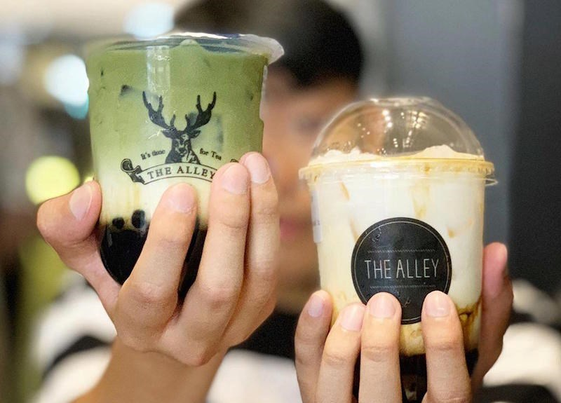

Boba Boom: How Vancouver Fell in Love with Bubble Tea
Esme Chan - October 24, 2025 - Local Food News

If you live in Vancouver, you have probably noticed something. Bubble tea shops are absolutely
everywhere. From Robson to Richmond, it feels like there is a new one opening every week. For
many of us, grabbing a bubble tea is just part of the routine, but how did this sweet, chewy
drink take over the city and basically the world?
Bubble tea, or boba, was born in Taiwan during the 1980s when someone decided to mix milk tea
with chewy tapioca pearls. What started as a simple experiment soon became a national obsession.
The texture, the flavor, and the interactive experience of sipping pearls through a fat straw
made it instantly fun and unique. Fast forward a few decades and bubble tea is now a global icon
that represents Asian creativity, youth culture, and modern café life.
Vancouver turned out to be the perfect home for boba. The city’s strong Asian influence, café
culture, and love for food trends made bubble tea an instant hit. Walk down almost any street in
Richmond or Burnaby, and you will spot a colorful lineup of brands from across Asia such as
Chatime, The Alley, Xing Fu Tang, and Gong Cha. Alongside them, local independent cafés have
taken the concept even further, offering handmade pearls, oat milk blends, and seasonal fruit
teas made with local ingredients.

What makes bubble tea so addictive is the freedom to make it your own. You can choose your
sweetness level, ice amount, toppings, and tea base. Whether you are in the mood for classic
black milk tea or something playful like mango green tea with coconut jelly, there is a flavor
for every mood. It is the ultimate DIY drink, and Gen Z especially loves that sense of
personalization.
The experience of bubble tea is not just about taste but also the feeling
that comes with it.
From the pop of the sealing machine to the first satisfying sip through that wide straw, every
step feels part of the ritual. And of course, the design of bubble tea is social media gold.
Those cute plastic cups, pastel colors, and slow-motion boomerangs of shaking your drink are
irresistible for anyone who loves an aesthetic post.
Beyond the trend, bubble tea represents something bigger for the
Vancouver community. It is a
cultural bridge that connects generations and backgrounds. For some, it is a nostalgic reminder
of home in Taiwan, Hong Kong, or Singapore. For others, it is an entry point into Asian food
culture, approachable, fun, and endlessly creative.
Whether you are loyal to your classic milk tea or obsessed with brown sugar oat lattes, one
thing is clear. Bubble tea is more than just a drink. It has become Vancouver’s sweet, chewy
love language.
For more new and upcoming food spots in Metro Vancouver, follow @TASTEBUDS here , and
subscribe to our
weekly newsletter here.
Address: 101 Boba, 4458 Main St, Vancouver, BC V5V 3R3, CA
Website | Instagram